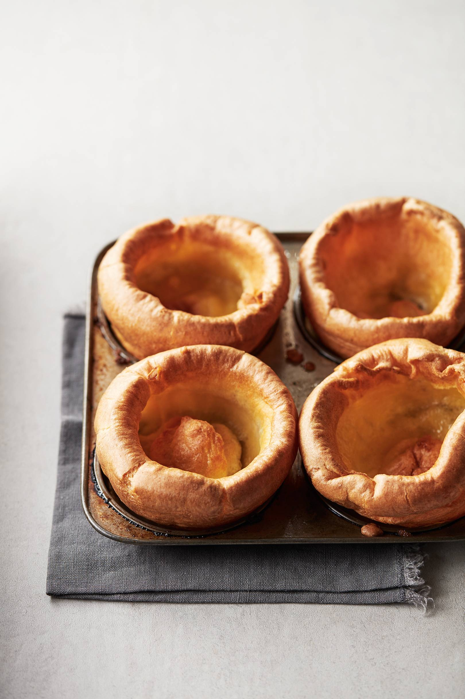

Yorkshire pudding

Once you've made yorkshire pudding yourself you will never go back to the shop bought version
trust me.
Ingredients:
- Three eggs
- 150ml milk
- 150ml plain flour
- 1/2 of salt
- Sunflower oil for greasing the trays
Method:
- To make the mixture first sift the plain flour into a jug, then stir in the salt.
- Pour in the milk, then crack in the eggs, whisk the mixture even with a hand balloon mix or
an electric hand mix, whisk until nice and smooth no lumps in the mix.
- Place the mixture in the fridge cover with a plate, while the oven warms up.
- Pre-heat the oven to the highest setting.
- Grease a four holed yorkshire pudding tray and a six holed yorkshire pudding tray,
to do this place about 1/2 tsp of sunflower oil in each tray.
- When the oven is hot place the greased tray in the middle of the oven. Cook for five to ten minutes to get
the oil nice and hot.
- Quickly take the yorkshire pudding mix out of the fridge and give the mix a quick stir.
- Take the trays out of the oven and fill each hole with the yorkshire pudding. Then place the tray back into the oven.
- Leave to cook for around 20 minutes until risen and golden.
Tips: 1. I measure the milk and flour with a 1/2cup. 2.One egg is around 50ml, if you want to make
a bigger mix add 50ml more flour and 50ml more flour to each addition egg you add.